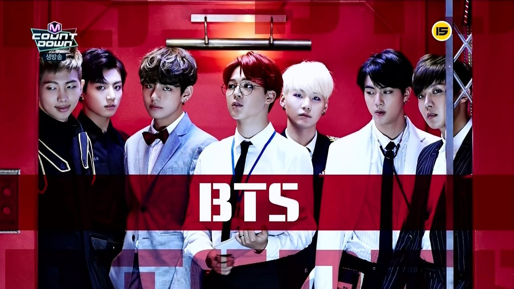

BTS (Bangtan Sonyeondan)방탄소년단
A Global South Korean Boy Band.

Members: Kim Namjoon-Leader(RM), Jeon Jungkook (Jungkook), Kim Taehyung (V), Park Jimin (Jimin), Min Yoongi (Suga/Agust D), Kim Seokjin (Jin), Jung Hoseok (J-hope)
***From Left to Right***
@BTS Group Pictures@
***From Left to Right***

Highlight: Timeframe of BTS
- 2010-2014: Formation and Early Years
- 2010 = BTS began its formation in 2010 after Big Hit Entertainment CEO Bang Si-hyuk met with group leader RM and was impressed with his rapping.
- 2012 = The lineup was finalized with Jin, Suga, J-Hope, RM, Jimin, V, and Jungkook.
- June 12, 2013 = BTS released their debut single album 2 Cool 4 Skool, the first installment in their "school trilogy" series, simultaneously with its lead single "No More Dream".
- September 2013 = BTS released the second part to their "school trilogy,” the extended play O!RUL8,2?, along with its single "N.O,”.
- Late 2013 = BTS was recognized with several New Artist of the Year awards, including the 5th Melon Music Awards, 28th Golden Disc Awards and the 23rd Seoul Music Awards.
- 2014-2015: Moderate Success and First Concert Tour
- January 2014 = The last act of their "school trilogy", the EP Skool Luv Affair, was released and topped the Gaon Album Chart. It also marked BTS’ first appearance on Billboard's World Albums Chart, peaking at number three.
- July 2014 & August 2014 = BTS held their first concert in the United States in West Hollywood for free to an audience of 200 fans (July), and the group also made their first appearance at KCON in Los Angeles (August).
- August 2014 = BTS released their first Korean studio album, "Dark & Wild" which served as a narrative extension of the “school trilogy” and a transition into their next series.
- December 2014 = Their first Japanese studio album, Wake Up was released.
- 2015-2016: Mainstream Breakthrough and Commercial Success
- March 2015 = Their third EP, "The Most Beautiful Moment in Life, Part 1", explored the growth and emotional agony of youth as well as its playful and uplifting sides.
- June 17, 2015 = BTS' fourth Japanese single, "For You", was released on June 17 to celebrate the first anniversary of their Japanese debut and topped Oricon's daily chart.
- November 2015 = BTS commenced their third concert tour, 2015 BTS LIVE "The Most Beautiful Moment in Life: On Stage", debuting their new song and the lead single from their fourth EP The Most Beautiful Moment in Life, Part 2, "Run", during the Seoul dates.
- Late 2015 = BTS were awarded Best World Performer at the 17th Mnet Asian Music Awards in recognition of their international fan base.
- May 2016 = Their first Korean compilation album and the finale to their "youth series", "The Most Beautiful Moment in Life: Young Forever" was released.
- September 7, 2016 = BTS released their second Japanese studio album Youth.
- October 10, 2016 = BTS released their second Korean studio album, "Wings".
- 2017: International Expansion and Collaborations
- 2017 = BTS embarked on their "Love Yourself" series which sought the enlightenment of self-love through the narrative sequence of "beginning, development, turn, and conclusion."
- February 2017 = BTS released the repackaged edition of Wings (2016), entitled "You Never Walk Alone".
- Early September 2017 = BTS was later invited by Seo Taiji to perform as backup vocalists and dancers for eight songs in his Seoul Olympic Stadium concert. He declares to BTS saying, "This is your generation now. Show them."
- September 18, 2017 = BTS released the first part of the series, their fifth EP, "Love Yourself: Her" and featured music from the Chainsmokers' Andrew Taggart for the track "Best of Me".
- Novermber 2017 = November 2017, BTS became the first K-pop group to perform at the American Music Awards, raising their profile internationally.
- December 2017 = They also became the first K-pop group to perform on Dick Clark's New Year's Rockin' Eve to welcome the new year and made their Japanese TV music show debut on TV Asahi's Japan Music Station Super Live.
- Late December 2017 = BTS won their second Artist of the Year at the 19th Mnet Asian Music Awards, becoming the first act to win the award two years in a row. They also became the first artist outside of the "Big Three" to win major awards at the Golden Disc Awards and the Seoul Music Awards, respectively.
- 2018: Worldwide Recognition
- March-May 2018 = BTS released an original eight-episode documentary series exclusively on YouTube Premium entitled "Burn the Stage", offering a behind-the-scenes look at the group's 2017 Wings Tour.
- April 4, 2018 = The group also released their third Japanese studio album, "Face Yourself". In conjunction, the group released a nine-minute short film titled "Euphoria: Theme of Love Yourself: Wonder," which featured the song "Euphoria".
- May 20, 2018 = BTS released their third Korean-language studio album, "Love Yourself: Tear" in conjunction with an appearance at the 25th Billboard Music Awards.
- August 24, 2018 = As the conclusion of the Love Yourself series, BTS released their second Korean compilation album "Love Yourself: Answer".
- October 18, 2018 = BTS renewed their contract with Big Hit Entertainment through 2026.
- November 15, 2018 = BTS released "Burn the Stage: The Movie" in theaters worldwide to commercial success.
- Late December 2018 = BTS won their third Artist of the Year at the 20th Mnet Asian Music Awards in a row and ranked number eight on Billboard's year-end Top Artist Chart. The group sold more than ten millions albums in South Korea alone, with five million being sold in 2018 alone.
- 2019: MAP OF THE SOUL: Persona, Stadium World Tour and BTS World
- 2019 = BTS embarked on their world tour stadium extension, "Love Yourself: Speak Yourself" (3rd worldwide concert tour). BTS became the first Asian and first non-English speaking artist ever to headline and sell out Wembley Stadium.
- February 10, 2019 = BTS attended the 61st Grammy Awards as award presenters.
- April 12, 2019 = Their sixth EP, "Map of the Soul: Persona", was released with the lead single "Boy with Luv".
- June 2019 = BTS released three collaboration singles, "Dream Glow" featuring English singer Charli XCX, "A Brand New Day" with Swedish singer Zara Larsson, and "All Night" featuring American rapper Juice Wrld.
- June 28, 2019 = The group released the song "Heartbeat" with a music video from the game's official soundtrack, titled "BTS World: Original Soundtrack".
- July 3, 2019 = BTS released their tenth Japanese single "Lights". It is their first million certification in Japan since their debut.
- November 24, 2019 = BTS became the first K-pop group to win the Favorite Duo or Group – Pop/Rock at the 2019 American Music Awards and the Favourite Social Artist award consecutively in 2018 and 2019.
- November 30 & December 5, 2019 = BTS attended both the 2019 Melon Music Awards and 2019 Mnet Asian Music Awards.
- 2020: MAP OF THE SOUL: 7, "Dynamite", and Be
- anuary 4-5, 2020 = At the 34th Golden Disc Awards, BTS became the first artists in history to win grand prizes in both the physical and digital categories in a single year.
- January 17, 2020 = BTS released "Black Swan" along with a choreography art film performed by Slovenian-based MN Dance Company as the first single from their fourth Korean-language studio album, "Map of the Soul: 7".
- April 2020 = BTS became the first South Korean artist to sell more than 20 million albums cumulatively, becoming the best-selling artist in South Korean history.
- June 7, 2020 = BTS headlined YouTube's Dear Class of 2020 online graduation event, performing "Boy with Luv", "Spring Day", and "Mikrokosmos".
- June 14, 2020 = BTS held a 100-minute long online live concert, "Bang Bang Con: The Live", as a part of their 7th debut anniversary.
- July 14, 2020 = BTS released the Japanese single, "Stay Gold", from their fourth Japanese studio album, "Map of the Soul: 7 – The Journey".
- August 21, 2020 = BTS released their first English-language single, "Dynamite", which debuted at number one on the US Billboard Hot 100 chart.
- August 31, 2020 = BTS made their MTV Video Music Awards (VMAs) debut with the first live performance of "Dynamite" and won four awards: Best Group, Best Choreography, Best Pop Video, and Best K-pop (the last three for their music video for "On").
- October 2, 2020 = BTS released a remix of Jawsh 685 and Jason Derulo's single "Savage Love (Laxed – Siren Beat)".
- October 13, 2020 = They re-released their 2014 album Skool Luv Affair, debuting in the Top 10 of Billboard’s Rap Albums chart and becoming their first entry on the genre-specific chart.
- November 20, 2020 = They released their fifth Korean studio album called Be.[335][336][337] with the album's lead single being "Life Goes On"
- 2020 = BTS recorded a number of notable achievements: their third consecutive number one in just three months (achieving it even faster than any band since The Beatles in 1964), the first song performed primarily in Korean to debut in the top spot, seven songs appearing simultaneously on the Hot 100 chart, and the first group in chart history with two number one Hot 100 debuts.